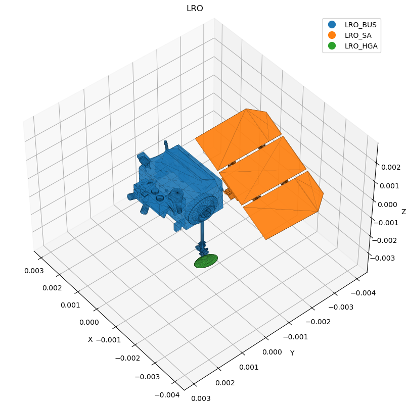

Notebook n. 1:
This is a first walk-through some of the functionalities of pyRTX. In this example we will show how to set up the code to compute the Solar Radiation Pressure (SRP) considering the 3D shape of the spacecraft and different levels of complexity for the sun photons modeling.
Details about the spacecraft shape modeling are treated in a different notebook
[1]:
# Imports
import spiceypy as sp
import xarray as xr
import matplotlib.pyplot as plt
import logging, timeit
import numpy as np
from pyRTX.classes.Spacecraft import Spacecraft
from pyRTX.classes.Planet import Planet
from pyRTX.classes.PixelPlane import PixelPlane
from pyRTX.classes.RayTracer import RayTracer
from pyRTX.classes.SRP import SunShadow, SolarPressure
from pyRTX.classes.Precompute import Precompute
from pyRTX.core.analysis_utils import epochRange2
from pyRTX.visual.utils import plot_mesh
import logging
from numpy import floor, mod
import warnings
warnings.filterwarnings('ignore')
# Managing Error messages from trimesh
# (when concatenating textures, in this case, withouth .mtl definition, trimesh returns a warning that
# would fill the stdout. Deactivate it for a clean output)
log = logging.getLogger('trimesh')
log.disabled = True
[2]:
# For all calculations requiring geometry/astrodynamic data we use SPICE
# Thus a metakernel containing attitude/trajectory information must be provided
# See the one provided in the example_data for an example
METAKR = '../example_data/LRO/metakernel_lro.tm' # metakernel
sp.furnsh(METAKR) # Load the metakernel containing references to the necessary SPICE frames
[3]:
# Here we define some general inputs needed by subsequent calculations
# Define the time span of the calculation
ref_epc = "2010 may 10 09:25:00" # Start epoch of the computation
duration = 10000 # Time span (seconds)
timestep = 100 # Time step (seconds)
epc_et0 = sp.str2et(ref_epc)
epc_et1 = epc_et0 + duration
epochs = epochRange2(startEpoch=epc_et0, endEpoch=epc_et1, step=timestep) # This is a utility function to create equally spaed epoche
# Ray tracing options
spacing = 0.01 # Spacing between rays (meters)
# We use the 3D shape of the spacecraft, thus the 3D files must be provided
# Here we always use .obj fles, but other formats can be used
# (as long as they're readable by trimesh)
obj_path = '../example_data/LRO/'
# Some physical constants
base_flux = 1361.5 # Sun flux in W/m2
ref_radius = 1737.4 # Reference radius of the Moon for eclipse calculations
n_cores = 10 # number of cores for parallel calculations
Spacecraft shape definition
Here we show how to define the spacecraft shape
[4]:
# The spacecraft mass can be a float, int or a xarray with times and values [kg]
# Here we use the simple case of a constant mass. See other examples for more details
# on using a time-variable mass
sc_mass = 2000 # kg
# 3D shape definition
# Define the Spacecraft Object
# The spacecraft object is basically a dictionary
# containing each component of the spacecraft.
# Each component must have a 3d shape, a reference frame,
# a position and thermo-optical coeffiients (diffusive and specular)
#
# The reference frame of each object can be defined as the name
# of a spice frame (frame_type = 'Spice') thus CK kernels must be provided
# or as a User Defined frame (frame_type = 'UD'). In this case the user must provide the
# rotation matrix between the object frame and the base frame of the overall spaecraft.
# Here we use the Spice frames defined for LRO. In another example we'll see how to
# use custom frames to achieve different results.
#(Refer to the class documentation for further details)
lro = Spacecraft( name = 'LRO',
base_frame = 'LRO_SC_BUS', # Name of the spacecraft body-fixed frame
mass = sc_mass,
spacecraft_model = { # Define a spacecraft model
'LRO_BUS': {
'file' : obj_path + 'bus_rotated.obj', # .obj file of the spacecraft component
'frame_type': 'Spice', # type of frame (can be 'Spice' or 'UD')
'frame_name': 'LRO_SC_BUS', # Name of the frame
'center': [0.0,0.0,0.0], # Origin of the component in the S/C frame
'diffuse': 0.1, # Diffuse reflect. coefficient
'specular': 0.3, # Specular reflect. coefficient
},
'LRO_SA': {
'file': obj_path + 'SA_recentred.obj',
'frame_type': 'Spice',
'frame_name': 'LRO_SA',
'center': [-1,-1.1, -0.1],
'diffuse': 0,
'specular': 0.3,
},
'LRO_HGA': {
'file': obj_path + 'HGA_recentred.obj',
'frame_type': 'Spice',
'frame_name': 'LRO_HGA',
'center':[-0.99, -0.3, -3.1],
'diffuse': 0.2,
'specular': 0.1,
},
}
)
[5]:
# Precomputation object. This object performs all the calls to spiceypy before
# calculating the acceleration. This is necessary when calculating the acceleration
# with parallel cores.
prec = Precompute(epochs = epochs,)
prec.precomputeSolarPressure(lro, moon, correction='LT+S')
prec.dump()
shadow = SunShadow( spacecraft = lro,
body = 'Moon',
bodyShape = moon,
limbDarkening = 'Eddington',
precomputation = prec, # Note the difference here
)
# Define the solar pressure object
srp = SolarPressure( lro,
rtx,
baseflux = base_flux,
shadowObj = shadow,
precomputation = prec, # Note the difference here
)
N_cores = 10
tic = timeit.default_timer()
accel = srp.compute(epochs, n_cores = N_cores) * 1e3
toc = timeit.default_timer()
fig, ax = plt.subplots(4, 1, figsize=(14,8), sharex = True)
ax[0].plot(eps, accel[:,0], linewidth = 2, color = "tab:blue")
ax[0].set_ylabel('X [m/s^2]')
ax[1].plot(eps, accel[:,1], linewidth = 2, color = "tab:blue")
ax[1].set_ylabel('Y [m/s^2]')
ax[2].plot(eps, accel[:,2], linewidth = 2, color = "tab:blue")
ax[2].set_ylabel('Z [m/s^2]')
ax[3].plot(eps, np.linalg.norm(accel, axis = 1))
ax[3].set_ylabel('Total Acceleration [m/s^2]')
ax[3].set_xlabel('Hours from t0')
Spacecraft LRO composed of 3 elements:
1) LRO_BUS: Proper Frame: LRO_SC_BUS | Frame Type: Spice
2) LRO_SA: Proper Frame: LRO_SA | Frame Type: Spice
3) LRO_HGA: Proper Frame: LRO_HGA | Frame Type: Spice
[5]:
(<Figure size 1000x800 with 1 Axes>,
<Axes3D: title={'center': 'LRO'}, xlabel='X', ylabel='Y', zlabel='Z'>)


Exporting the data
Once the accelerations have been computed, the user can choose to use them in any OD/GNC code. We provide a few export utilities to simplify some common operations:
export_formatted()exports the accelerations as a csv fileexport_exac()exports the acceleration in the GEODYN external acceleration (EXAC) binary interchange format
[13]:
from pyRTX.utilities import export_formatted
output_file = 'outputs/exported_acceleration.csv'
# The unit input is optional. If provided it will print the units
# of the acceleration in the output file header
export_formatted(accel, epochs, output_file, units = 'km/s2')
[14]:
from pyRTX.utilities import export_exac, to_datetime
# This format requires more inputs
# See the function documentation for more information.
outfile = 'outputs/exported_accelerations.ex'
satelliteID = '075'
data = accel
tstep = timestep
startTime = to_datetime(epochs[0])
endTime = to_datetime(epochs[-1])
export_exac(satelliteID, data, tstep, startTime, endTime, outfile)
[ ]: